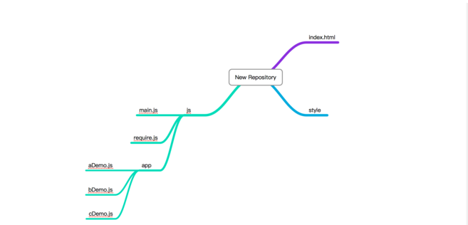

RequireJS 的基础与入门
一、为什么要用 RequireJS？
<script src="1.js"></script><script src="2.js"></script><script src="3.js"></script><script src="4.js"></script><script src="5.js"></script>这样的写法有很大的缺点:
- 1.加载的时候，浏览器会停止网页渲染，加载文件越多，网页失去响应的时间就会越长；
- 2.由于 js 文件之间存在依赖关系，因此必须严格保证加载顺序（比如上例的 1.js 要在 2.js 的前面），依赖性最大的模块一定要放到最后加载，当依赖关系很复杂的时候，代码的编写和维护都会变得困难。
为了解决上述问题，于是 RequireJS 诞生了。
二、RequireJS 的准备和加载
第一步，你需要去
官方网站 下载相应的 RequireJS 版本。
第二步，假定你把它放在 js 子目录下，那么
<script src="js/require.js" defer async="true" data-main="js/main"></script> async 属性表明这个文件需要异步加载，避免网页失去响应。IE 不支持这个属性，只支持 defer，所以把 defer 也写上。当然，如果你是把它放在网页底部，那么就可以去掉 defer async 属性,如下：
<script src="js/require.js" data-main="js/main"></script>data-main 属性：指定网页程序的主模块。在上例中，就是 js 目录下面的 main.js，这个文件会第一个被 require.js 加载。由于 require.js 默认的文件后缀名是 js，所以可以把 main.js 简写成 main .
三、主模块（main.js）的写法
一般来说，主模块需要依赖于其它模块；如果没有依赖，也就没有用 RequireJS 的必要了。
// main.jsrequire(['moduleA', 'moduleB', 'moduleC'], function (moduleA, moduleB, moduleC){// doSomething;});
require() 函数接受两个参数：
- 第一个参数：数组。表示所依赖的模块。
- 第二个参数：回调函数。当前面指定的模块都加载成功后，它将被调用。加载的模块会以参数形式传入该函数，从而在回调函数内部就可以使用这些模块。
四、主模块（main.js）的加载
假定你的项目文件夹如下图：
我们先来说一下 require.config() 方法，我们可以对模块的加载行为进行自定义。require.config() 就写在主模块（main.js）的头部。参数就是一个对象，这个对象的 paths 属性指定各个模块的加载路径，那么：
// main.js// 第一种写法require.config({baseUrl:'js/app',paths:{"a":"aDemo","b":"bDemo"}});// 第二种写法require.config({paths:{"a":"js/app/aDemo","b":"js/app/bDemo"}});// 以上两种写法任选其一即可,然后require(['a','b'],function(a,b){// doSomething;})
五、AMD 模块的写法
require.js 加载的模块，采用 AMD 规范。也就是说，模块必须按照 AMD 的规定来写。具体来说，就是模块必须采用特定的 define() 函数来定义。
假定 aDemo.js 依赖于 cDemo.js , bDemo.js 不依赖任何其它模块。编写如下代码：
// cDemo.jsdefine(function(){return {name:'Hannahza'}})
// aDemo.jsrequire.config({baseUrl:'js/app',paths:{"c":"cDemo"}})define(['c'],function(c){return{culor:'black',size:'unsize',c:c}});
// bDemo.jsdefine(function(){var add = function(x,y){return x + y;}var subtract = function(x,y){return x - y;}return{add:add,subtract:subtract}})
六、完善主模块（main.js）
// main.jsrequire.config({baseUrl:'js/app',paths:{"a":"aDemo","b":"bDemo"}});require(['a','b'],function(a,b){consule.log(b.add(4,5));consule.log(b.subtract(11,22));consule.log(a);consule.log(a.c.name);})
七、加载非规范的模块
理论上，require.js 加载的模块，必须是按照 AMD 规范、用 define() 函数定义的模块。但是实际上，虽然已经有一部分流行的函数库（比如jQuery）符合 AMD 规范，更多的库并不符合。那么，require.js 是否能够加载非规范的模块呢？
回答是可以的。
这样的模块在用 require() 加载之前，要先用 require.config() 方法，定义它们的一些特征。举例来说，underscore 和 backbone 这两个库，都没有采用 AMD 规范编写。如果要加载它们的话，必须先定义它们的特征。
require.config({shim: {'underscore':{exports: '_'},'backbone': {deps: ['underscore', 'jquery'],exports: 'Backbone'}}});
require.config() 接受一个配置对象，这个对象除了有前面说过的 paths 属性之外，还有一个 shim 属性，专门用来配置不兼容的模块。具体来说，每个模块要定义两个属性：
- exports 值（输出的变量名），表明这个模块外部调用时的名称；
- deps 数组，表明该模块的依赖性。
比如，jQuery的插件可以这样定义：
require.config({shim: {'jquery.scrull': {deps: ['jquery'],exports: 'jQuery.fn.scrull'}}});
八、小结
特别鸣谢 阮一峰的网络日志 。
本文简单介绍了 RequireJS 的基础与入门，更多知识可查询 RequireJS 中文网。